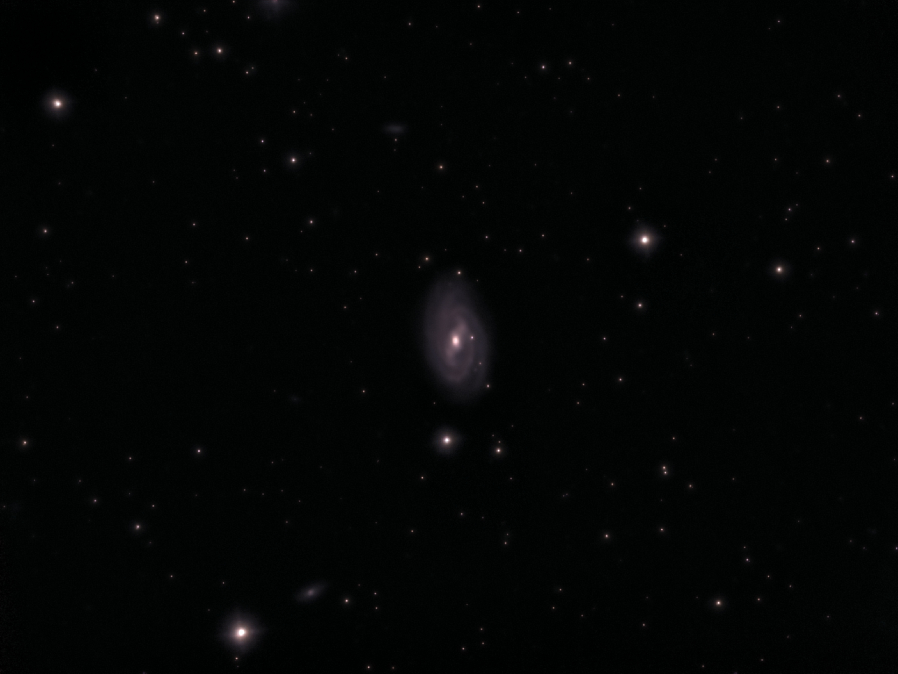

Det periodiske system
Oversigt over alle grundstofferne og deres egenskaber – udgangspunktet for al kemi og atomfysik.
En samling interaktive demonstrationer og simulationer der bygger bro fra atomets indre til kosmos – ordnet efter fagområde og pædagogisk progression fra det grundlæggende til det avancerede.
💻 Bedst på bærbar, tablet eller PCStoffets byggesten – fra det periodiske system til de enkelte atomers indre liv.
Oversigt over alle grundstofferne og deres egenskaber – udgangspunktet for al kemi og atomfysik.
Når der sker ændringer i atomernes elektronskyer, udsender de lys. Her ser du, hvordan farver opstår på atomart niveau.
Det enkleste atom – og udgangspunktet for kvantemekanikken. Se Balmer-serien og elektronovergange visualiseret.
Næste skridt op fra brint. Grundlæggende om heliumkernens opbygning og bindingsenergi.
Når elektroner placeres i et magnetfelt, opstår der to energiniveauer. ESR udnytter denne effekt til at studere uparrede elektroner.
Lyset som bølge og partikel – fra polarisation til stimuleret emission.
Lyset er en transversal bølge. Udforsk hvordan polariseret lys opfører sig sammen med plast og plastfolie mellem to polaroidfiltre.
Pumpning af elektroner og stimuleret emission – sådan opstår koherent lys i en laser.
Bølger i luften – fra grundlæggende frekvenser til avanceret rør-akustik.
Hvordan forskellige frekvenser interagerer og blandes – introduktionen til bølgefysik.
Analysér din egen stemme via Fourier-transformation eller skab nye lyde fra bunden.
Hvordan lyd opfører sig på is, i skoven og i et glas – akustik i den virkelige verden.
Resonans og bølgeudbredelse i rør – emnet for mit kandidatprojekt. Inkluderer den fulde afhandling.
Hvad sker der med lydens udbredelse i den relativistiske grænse? En dybdegående og avanceret model.
Varme, arbejde og entropi – fra konkret motor til subtilt paradoks.
Et anvendt dyk ned i termodynamikken. Sådan omdannes varmeforskelle til mekanisk arbejde.
Et teoretisk dyk i entropibegrebet – hvorfor er blandingsentropi ikke veldefineret klassisk?
Fysik kan opleves overalt – i køkkenet, på vejen og ude i naturen.
En samling små eksperimenter og observationer fra køkken, badeværelse og vej.
Fysikken bag bølger i vand, og hvordan de udbreder sig fra en forstyrrelse.
Udregninger og fysik bag brændstofforbrug ved kørsel på landevej og motorvej (Hyundai i10 som case).
Energien gemt i atomkernen – og dens dramatiske frigivelse.
Fysikken bag eksplosioner og kernebomber – fission, kædereaktioner og energifrigivelse.
Fra egne astrofotos af fjerne galakser til Jordens hældning, satellitbaner og kometer.

Mit seneste astrofoto: M109, en stangspiralgalakse ca. 84 mio. lysår væk. Optaget ved 56°N 11°E.
Når Jorden krydser en komets støvspor, opstår der meteorregn. Udforsk Lyriderne.
Forståelsen af Jordens hældning og årets gang omkring Solen – hvorfor har vi sommer og vinter?
Kig på satellittens bane set fra Jorden – grundet Jordens rotation – og samspillet med tyngdekraften.
Følg NASAs Artemis II-mission og dens bane omkring Månen.
Følg kometens bane gennem solsystemet – inklusive en undervisningspakke om kometbaner og Gauss’ metode.
Når naturvidenskab møder historie, arkitektur og åndsliv.
Historisk gennemgang af 1864-slaget – ballistik, taktik og kontekst.
Tag på vandring i Alhambra – maurisk arkitektur og geometriske mønstre i 2D og 3D.
En interaktiv ledsager til Rosenkransen.